Incident
Kumpulan informasi mengenai insiden, kecelakaan, dan peristiwa yang dirangkum dari berbagai sumber.
Kembali ke Beranda Goreplix
Jelajahi juga Darkness
Daftar konten
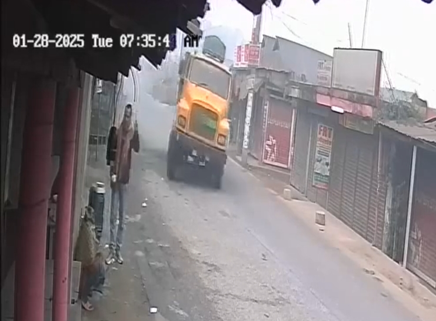
Pengusaha Tewas Terlindas Truk di Tarakanda
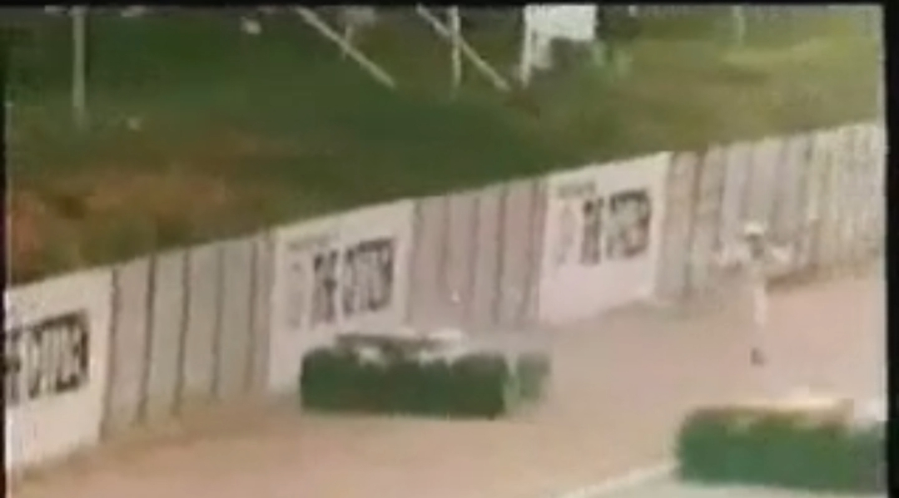
Kecelakaan F1 Tom Pryce di Afrika Selatan
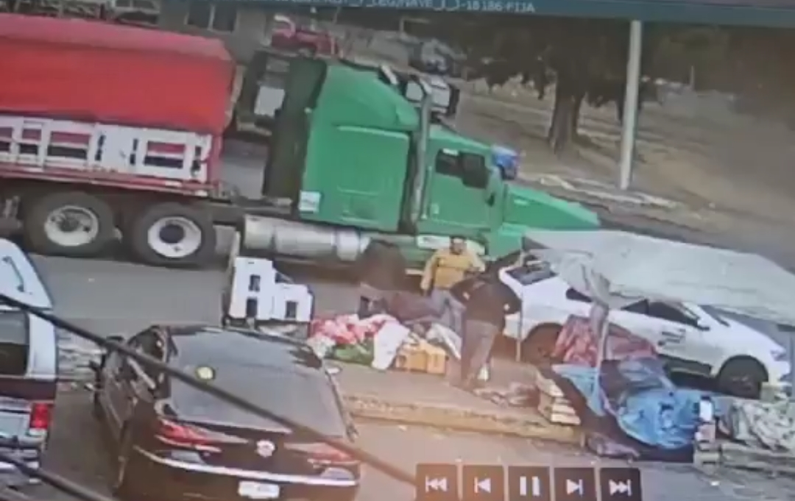
Tubuh Pria Hancur Terlindas Dua Tronton
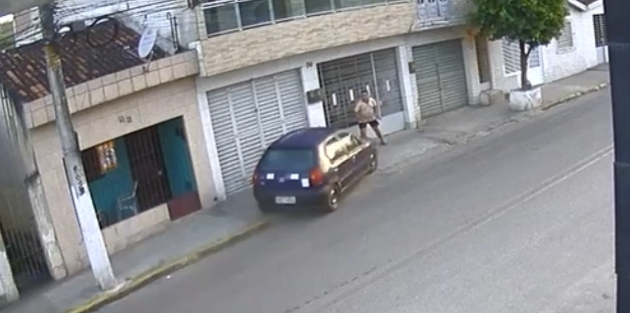
Seorang Pria Yang Berjalan di Trotoar Ditabrak Oleh Mobil Yang Lepas Kendali.
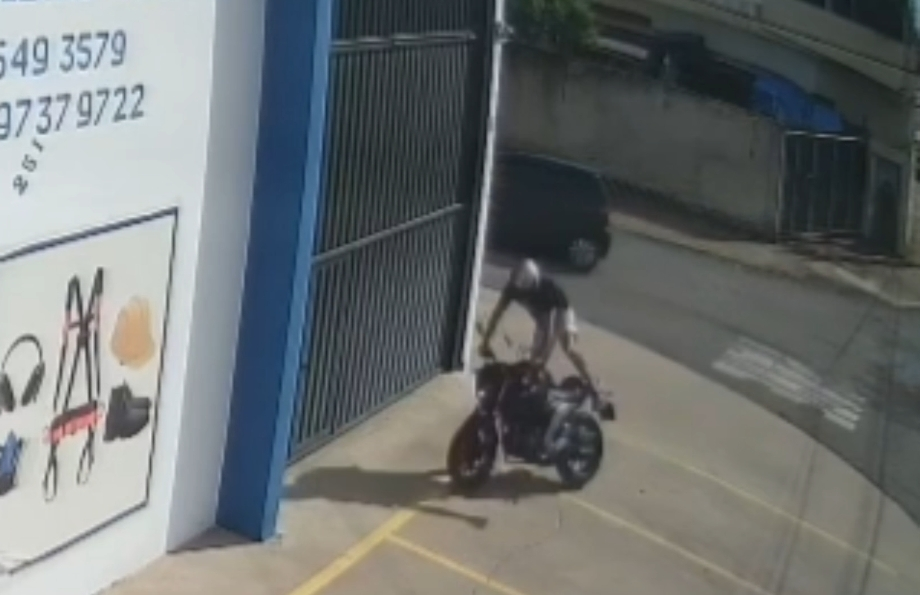
Kepala Pengendara Motor Meledak Saat Menabrak Beton
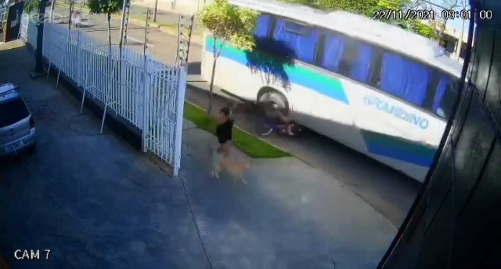
Pengendara Sepeda Terlindas Bus.
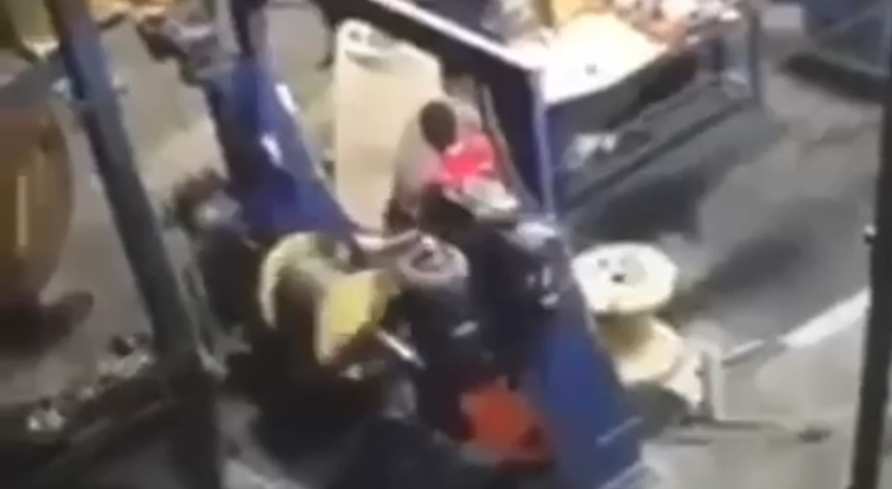
Pria Tersedot ke Dalam Mesin
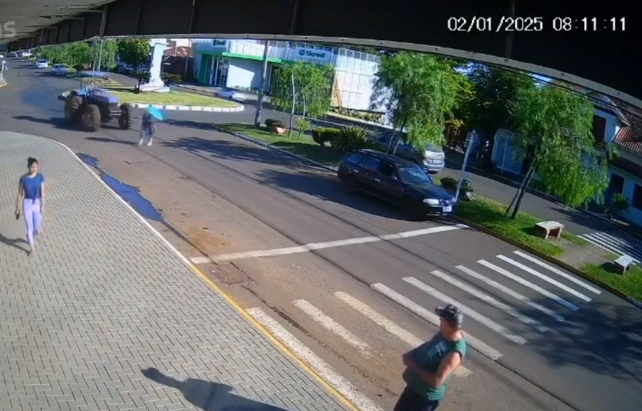
Wanita Tertabrak Traktor
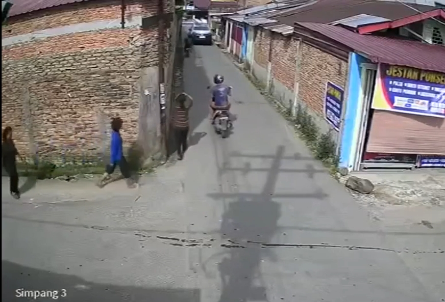
Dua Wanita Tewas Tertimpa Tembok
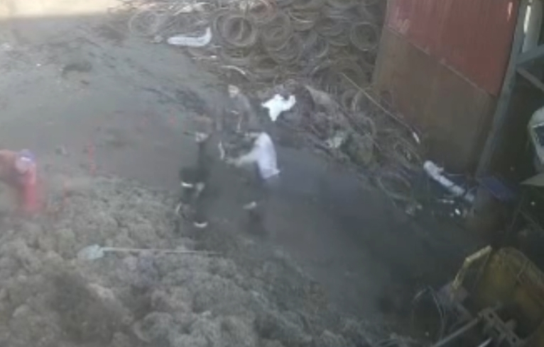
Pekerja Tertarik Ke Dalam Mesin Pemutar Kawat Di Turki
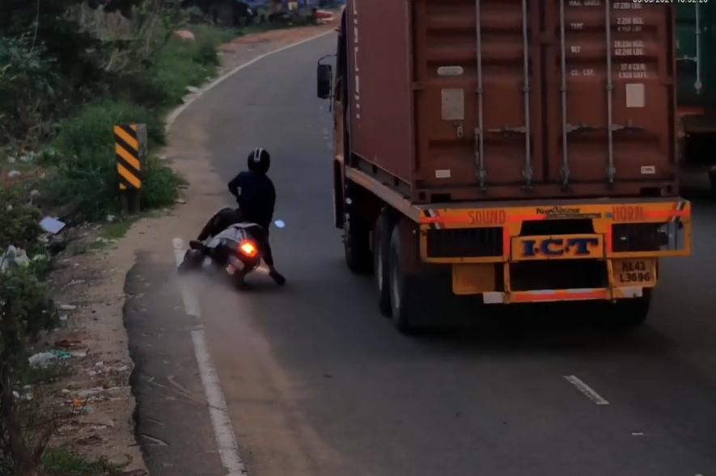
Pengendara Pepeda Motor Terlindas Truk
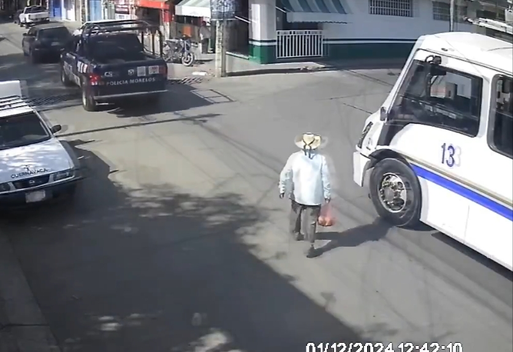
Seorang Kakek Terlindas Bus
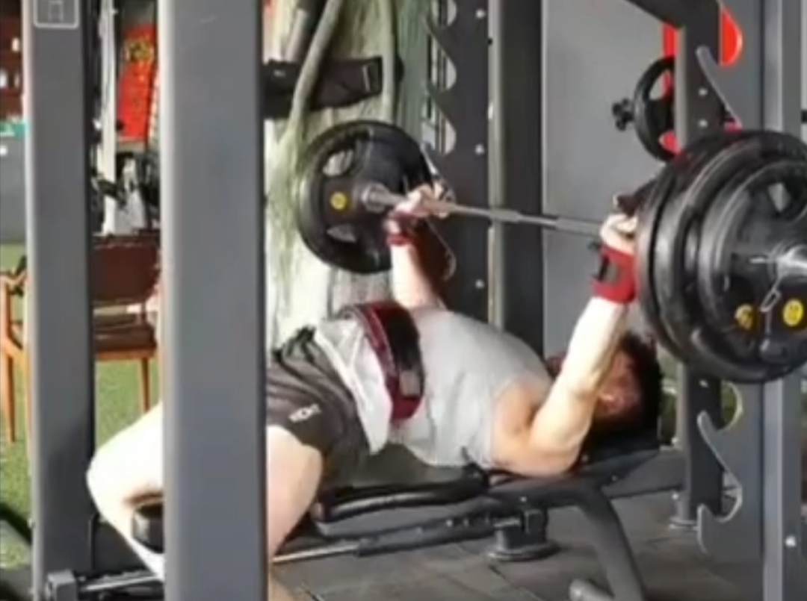
Tertimpa Alat Gym
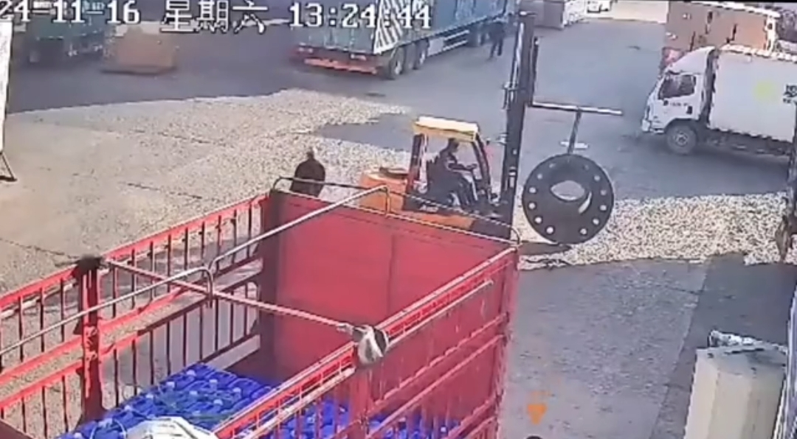
Pekerja Tertimpa Forklift
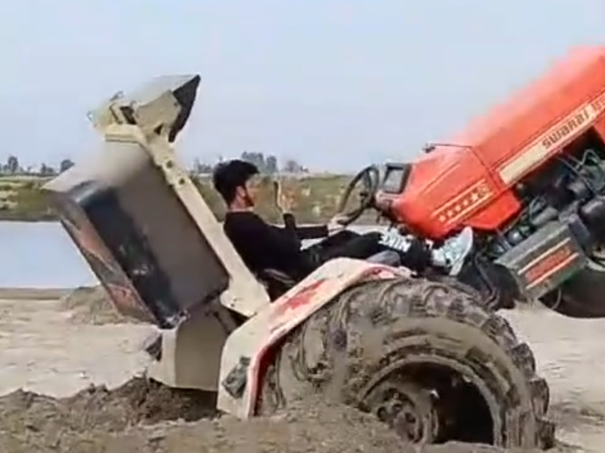
Tertimpa Traktor
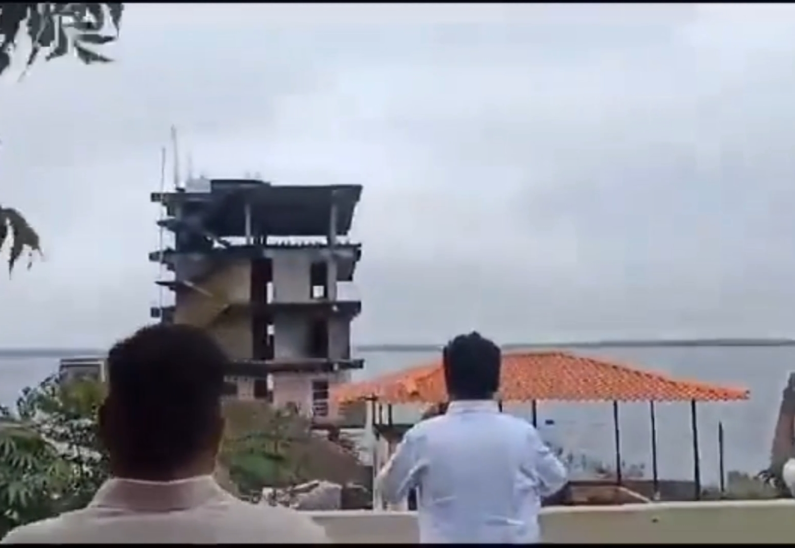
Pria Tewas Terkena Batu
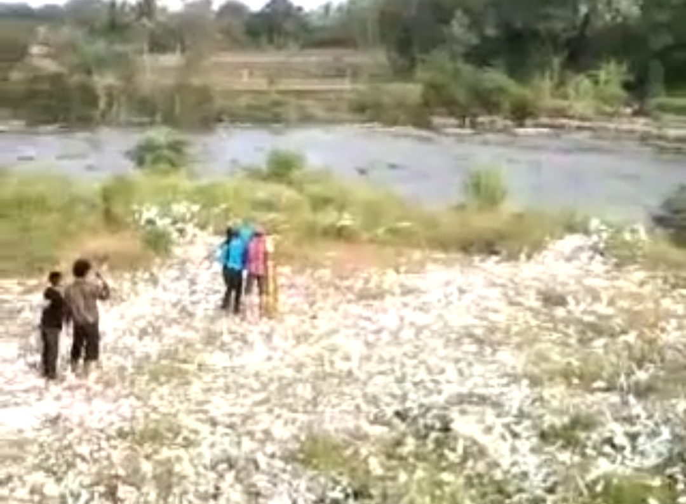
3 Pemuda Terkena Ledakan Petasan
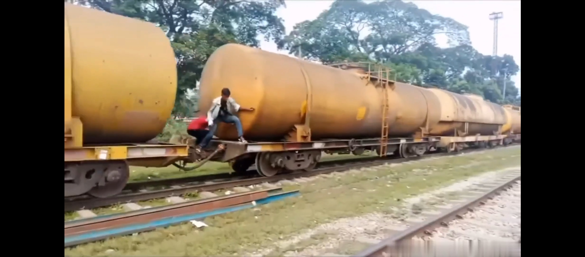
Badan Terlindas Kereta
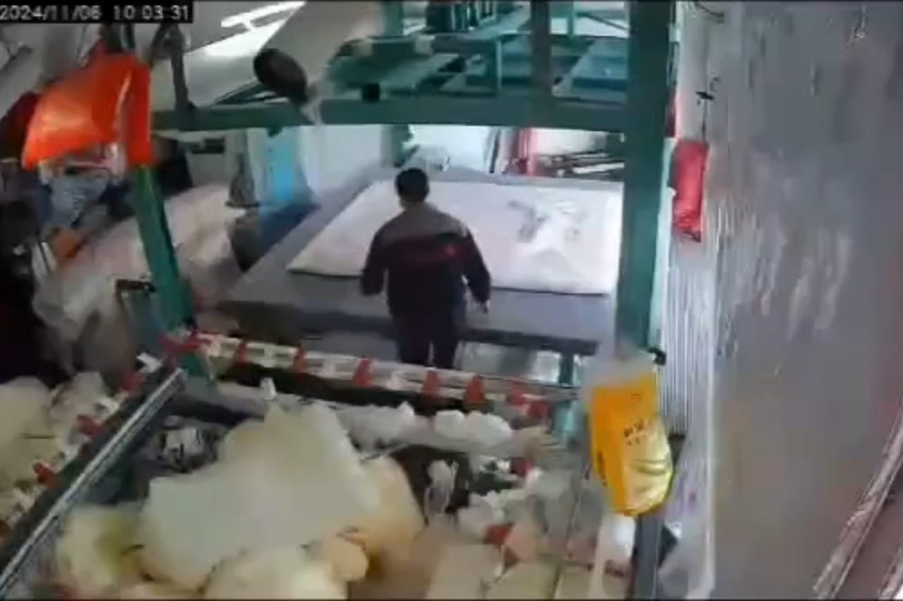